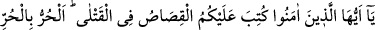
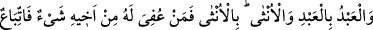
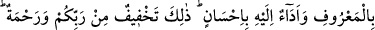
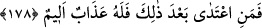

yerlere dağıtmak ikincisine ve namaz kılmaktan itibaren âyetin sonuna kadar olan kısım
ise üçüncüsüne işâret etmektedir. Bu sebeple bu özelliklerin hepsine sahip olan kimse,
îmân ve itikad adına bakılarak doğruluk, halkla muâşereti ve Hakk’la muâmelesine
bakılarak da takvâ vasfıyla vasıflanmıştır. Rasûlullah (s.a.) in: “Bu âyetin gerektirdiği
şekilde amel eden kişinin îmânı kemâle ermiştir.”[69] hadisi buna işâret etmektedir.
Şeyhim Atpazârî Osman Efendi şöyle demiştir: “Kişinin Hak ile olan muâmelesinde
takınacağı en güzel tavır, “teslîm ve rızâ”; halk ile muâmelesinde ise “afv ve
sehâ”dır.”
Mal sevgisi, nefsin önde gelen özelliklerinden biridir. Acelecilik de kötü
huylardandır. Bu sebeple, sabrın şükürden daha fazîletli olduğu söylenmiştir. Nitekim
şöyle bir haber nakledilmiştir:
Kıyâmet günü mükâfatını almak üzere yeryüzünün en şükreden kulu ile sıradan
sabreden bir kul getirilir. Allah Teâlâ: “Ben şu adama nimet verdim, o da şükretti.
Sana da belâ verdim, sabrettin. Bu sebeple senin ecrini kat kat fazla vereceğim.” der
ve ona şükredenlere verdiği mükâfatın kat kat fazlasını verir.[70]
Gerçek şu ki, îmân sahibi olmak, tevhîd ve şehâdetle olduğu gibi, nefsin terbiyesi de
tevhid zikri ve usûlü ile mümkündür.
178. Ey îmân edenler! Öldürülenler hakkında size kısas farz kılındı. Hüre hür,
köleye köle, kadına kadın (öldürülür). Ancak her kimin cezâsı, kardeşi
(öldürülenin velisi) tarafından bir miktar bağışlanırsa artık (taraflar) hakkaniyete
uymalı ve (öldüren) ona (gereken diyeti) güzellikle ödemelidir. Bu söylenenler,
rabbinizden bir hafifletme ve rahmettir. Her kim bundan sonra haddi aşarsa
muhakkak onun için elem verici bir azâb vardır.
Âyette hitab, mü’minlerin devlet başkanlarınadır. Allah Teâlâ devlet başkanına ve
onun makamına kâim olan kimselere, kısas hükmünü yerine getirmelerini vâcib
kılmıştır. Binâenaleyh âyetin mânâsı: “Ey devlet başkanları, kan sâhibi ve vârisler
istediği takdirde kısas icrâ etmeniz size farz kılınmıştır.” şeklinde takdîr edilebilir.
Hitabın katillere olması da muhtemeldir. O takdirde mânâ: Ey kasden cana kıyan
katiller, ölenin velîsi istediği takdirde nefislerinizi teslim etmeniz size farz kılındı, olur.
Katillerin istenildiği takdirde teslim-i nefs etmeleri gerekir. Çünkü, kul hakkı oluşu